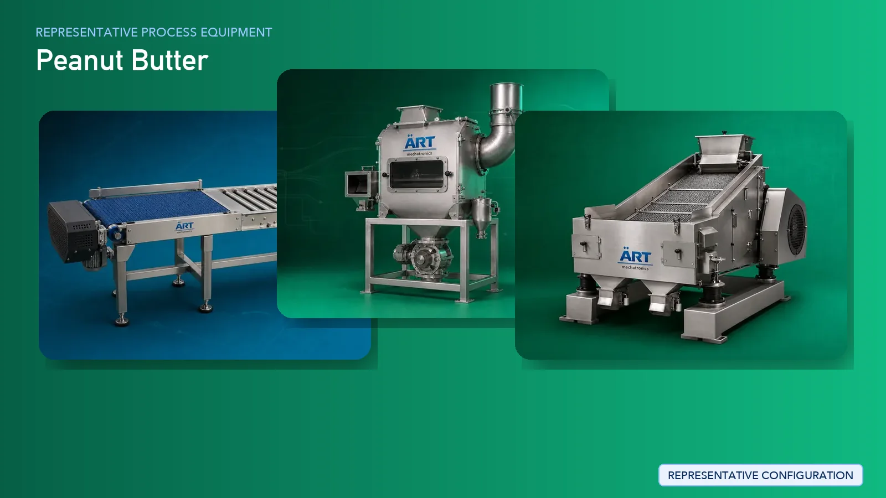

Peanut Butter Manufacturing Plant & Machinery Solutions
Peanut butter manufacturing is a fast-growing segment in the global health food and FMCG industry, producing smooth, crunchy, flavored, and protein-enriched peanut butter.

About Peanut Butter processing
ART Mechatronics provides complete turnkey solutions for peanut butter manufacturing plants, offering advanced systems for roasting, peeling, grinding, mixing, homogenizing, and packaging. Our solutions are designed for high-quality production, consistent texture, and efficient large-scale operations for domestic and export markets.
Complete Peanut Butter Process Flow
Raw groundnuts are received and cleaned to remove dust and impurities.
Ensures clean raw material input.
Peanuts are roasted to enhance flavor and aroma.
Ensures:
- Uniform roasting
- Flavor development
Roasted peanuts are cooled before further processing.
Prevents overcooking and preserves quality.
Outer skin is removed from roasted peanuts.
Ensures clean kernels.
Peanuts are sorted to remove defective kernels.
Ensures premium product quality.
Peanuts are ground into paste.
Produces:
- Smooth paste
- Controlled particle size
Ingredients such as salt, sugar, stabilizers, and flavors are added.
Ensures:
- Uniform taste
- Consistent formulation
- Creamy consistency
- No oil separation
Air is removed to improve shelf life.
Finished product is stored before packaging.
Peanut butter is packed into jars or containers.
Suitable for:
- Retail packaging
- Bulk supply
Machinery Required for Peanut Butter Plant
- Material Handling Systems
- Pre Cleaner
- Destoner
- Peanut Roaster
- Cooling Conveyor
- Peanut Peeling Machine
- Inspection System / Color Sorter
- Peanut Butter Grinder / Colloid Mill
- Mixing Tank
- Homogenizer
- Storage Tanks
- Filling & Packaging Machines
Turnkey Peanut Butter Plant Solutions
ART Mechatronics offers complete turnkey solutions for peanut butter manufacturing plants, including:
- Process design & plant layout
- Roasting and peeling systems
- Grinding and homogenizing systems
- Mixing and storage systems
- Packaging line integration
- Automation & control panels
- Installation & commissioning
- After-sales support
We customize solutions based on:
- Product type (smooth, crunchy, flavored)
- Production capacity
- Automation level
- Packaging format
Why Choose Art Mechatronics
- Expertise in nut and paste processing systems
- Advanced grinding and homogenization technology
- Consistent product texture and quality
- Hygienic food-grade machinery design
- High-efficiency production systems
- Global export capability
Machinery in a Peanut Butter plant
Where it's used
Get pricing & specs for the Peanut Butter plant
Share the product, target capacity, current process and plant location. These details help our engineers discuss the right machine or line configuration.
One partner, from design to start-up
ART Mechatronics designs, manufactures, installs and commissions your Peanut Butter solution with regional presence in India, UAE and Thailand.